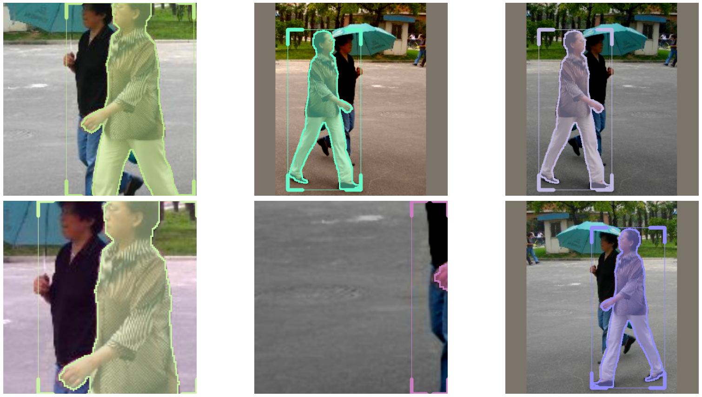

!nvidia-smi
How to use Mask RCNN
Installing IceVision
We ussually install IceVision with [all], but we can also use [inference] to install only the packages that inference methods depend on.
!pip install icevision[all] icedata
Imports
from icevision.all import *
from fastai.callback.wandb import *
from fastai.callback.tracker import SaveModelCallback
Data
We'll be using the Penn-Fudan dataset, which is already available under datasets.
data_dir = icedata.pennfudan.load_data()
class_map = icedata.pennfudan.class_map()
HBox(children=(HTML(value=''), FloatProgress(value=0.0, max=53723336.0), HTML(value='')))
As usual, let's create the parser and perfom a random data split.
parser = icedata.pennfudan.parser(data_dir)
train_records, valid_records = parser.parse()
HBox(children=(HTML(value=''), FloatProgress(value=0.0, max=170.0), HTML(value='')))
[1m[1mINFO [0m[1m[0m - [1m[34m[1mAutofixing records[0m[1m[34m[0m[1m[0m | [36micevision.parsers.parser[0m:[36mparse[0m:[36m124[0m
train_records[0]["masks"]
<EncodedRLEs with 1 objects>
Let's use the usual aug_tfms for training transforms with two small modifications:
- Decrease the rotation limit from 45 to 10.
- Use a more aggresive crop function.
shift_scale_rotate = tfms.A.ShiftScaleRotate(rotate_limit=10)
crop_fn = partial(tfms.A.RandomSizedCrop, min_max_height=(384//2, 384), p=.5)
train_tfms = tfms.A.Adapter(
[
*tfms.A.aug_tfms(size=384, presize=512, shift_scale_rotate=shift_scale_rotate, crop_fn=crop_fn),
tfms.A.Normalize(),
]
)
And for validation transforms, the simple resize_and_pad.
valid_tfms = tfms.A.Adapter([*tfms.A.resize_and_pad(size=348), tfms.A.Normalize()])
Now we can create the Dataset and take a look on how the images look after the transforms.
train_ds = Dataset(train_records, train_tfms)
valid_ds = Dataset(valid_records, valid_tfms)
samples = [train_ds[2] for _ in range(6)]
show_samples(samples, denormalize_fn=denormalize_imagenet, ncols=3, display_label=False, show=True)

Now we're ready to create the DataLoaders:
train_dl = mask_rcnn.train_dl(train_ds, batch_size=16, shuffle=True, num_workers=4)
valid_dl = mask_rcnn.valid_dl(valid_ds, batch_size=16, shuffle=False, num_workers=4)
Metrics
Metrics are a work in progress for Mask RCNN.
# metrics = [COCOMetric(COCOMetricType.mask)]
Model
Similarly to faster_rcnn, we just need the num_classes to create a Mask RCNN model.
model = mask_rcnn.model(num_classes=len(class_map))
Downloading: "https://download.pytorch.org/models/maskrcnn_resnet50_fpn_coco-bf2d0c1e.pth" to /root/.cache/torch/hub/checkpoints/maskrcnn_resnet50_fpn_coco-bf2d0c1e.pth
HBox(children=(HTML(value=''), FloatProgress(value=0.0, max=178090079.0), HTML(value='')))
wandb.init(project="icevision-masks", name="mask-rcnn-resnet50-2", reinit=True)
Finishing last run (ID:eu733uxj) before initializing another...
Waiting for W&B process to finish, PID 159
Program ended successfully.
VBox(children=(Label(value=' 347.34MB of 347.34MB uploaded (0.00MB deduped)\r'), FloatProgress(value=1.0, max=…
Find user logs for this run at: /content/wandb/run-20201112_010811-eu733uxj/logs/debug.log
Find internal logs for this run at: /content/wandb/run-20201112_010811-eu733uxj/logs/debug-internal.log
Run summary:
| epoch | 12 |
| train_loss | 0.38875 |
| raw_loss | 0.38006 |
| wd_0 | 0.01 |
| sqr_mom_0 | 0.99 |
| lr_0 | 0.0 |
| mom_0 | 0.94994 |
| eps_0 | 1e-05 |
| wd_1 | 0.01 |
| sqr_mom_1 | 0.99 |
| lr_1 | 0.0 |
| mom_1 | 0.94994 |
| eps_1 | 1e-05 |
| wd_2 | 0.01 |
| sqr_mom_2 | 0.99 |
| lr_2 | 0.0 |
| mom_2 | 0.94994 |
| eps_2 | 1e-05 |
| wd_3 | 0.01 |
| sqr_mom_3 | 0.99 |
| lr_3 | 0.0 |
| mom_3 | 0.94994 |
| eps_3 | 1e-05 |
| wd_4 | 0.01 |
| sqr_mom_4 | 0.99 |
| lr_4 | 0.0 |
| mom_4 | 0.94994 |
| eps_4 | 1e-05 |
| wd_5 | 0.01 |
| sqr_mom_5 | 0.99 |
| lr_5 | 0.0 |
| mom_5 | 0.94994 |
| eps_5 | 1e-05 |
| wd_6 | 0.01 |
| sqr_mom_6 | 0.99 |
| lr_6 | 0.0 |
| mom_6 | 0.94994 |
| eps_6 | 1e-05 |
| wd_7 | 0.01 |
| sqr_mom_7 | 0.99 |
| lr_7 | 0.0 |
| mom_7 | 0.94994 |
| eps_7 | 1e-05 |
| _step | 109 |
| _runtime | 5124 |
| _timestamp | 1605148415 |
| valid_loss | 0.31662 |
Run history:
| epoch | ▁▁▁▂▂▂▂▂▂▃▃▃▃▃▃▄▄▄▄▄▅▅▅▅▅▅▆▆▆▆▆▇▇▇▇▇▇███ |
| train_loss | █▇▆▅▄▄▃▂▂▂▁▂▁▁▁▁▁▁▁▁▁▁▁▁▁▁▁▁▁▁▁▁▁▁▁▁▁▁▁▁ |
| raw_loss | █▆▃▃▂▂▅▂▁▁▁▂▁▁▁▁▁▂▁▁▂▁▁▁▁▁▁▁▁▁▁▁▁▁▁▂▁▁▁▁ |
| wd_0 | ▁▁▁▁▁▁▁▁▁▁▁▁▁▁▁▁▁▁▁▁▁▁▁▁▁▁▁▁▁▁▁▁▁▁▁▁▁▁▁▁ |
| sqr_mom_0 | ▁▁▁▁▁▁▁▁▁▁▁▁▁▁▁▁▁▁▁▁▁▁▁▁▁▁▁▁▁▁▁▁▁▁▁▁▁▁▁▁ |
| lr_0 | ▁▁▃▄▅▇█▁▁▁▁▁▁▁▁▁▁▁▁▁▁▁▁▁▁▁▁▁▁▁▁▁▁▁▁▁▁▁▁▁ |
| mom_0 | ██▇▅▄▂▁██▇▆▅▄▃▂▁▁▁▁▁▁▂▂▂▃▃▄▄▄▅▅▆▆▇▇▇████ |
| eps_0 | ▁▁▁▁▁▁▁▁▁▁▁▁▁▁▁▁▁▁▁▁▁▁▁▁▁▁▁▁▁▁▁▁▁▁▁▁▁▁▁▁ |
| wd_1 | ▁▁▁▁▁▁▁▁▁▁▁▁▁▁▁▁▁▁▁▁▁▁▁▁▁▁▁▁▁▁▁▁▁▁▁▁▁▁▁▁ |
| sqr_mom_1 | ▁▁▁▁▁▁▁▁▁▁▁▁▁▁▁▁▁▁▁▁▁▁▁▁▁▁▁▁▁▁▁▁▁▁▁▁▁▁▁▁ |
| lr_1 | ▁▁▃▄▅▇█▁▁▁▁▁▁▂▂▂▂▂▂▂▂▂▂▂▂▁▁▁▁▁▁▁▁▁▁▁▁▁▁▁ |
| mom_1 | ██▇▅▄▂▁██▇▆▅▄▃▂▁▁▁▁▁▁▂▂▂▃▃▄▄▄▅▅▆▆▇▇▇████ |
| eps_1 | ▁▁▁▁▁▁▁▁▁▁▁▁▁▁▁▁▁▁▁▁▁▁▁▁▁▁▁▁▁▁▁▁▁▁▁▁▁▁▁▁ |
| wd_2 | ▁▁▁▁▁▁▁▁▁▁▁▁▁▁▁▁▁▁▁▁▁▁▁▁▁▁▁▁▁▁▁▁▁▁▁▁▁▁▁▁ |
| sqr_mom_2 | ▁▁▁▁▁▁▁▁▁▁▁▁▁▁▁▁▁▁▁▁▁▁▁▁▁▁▁▁▁▁▁▁▁▁▁▁▁▁▁▁ |
| lr_2 | ▁▁▃▄▅▇█▁▁▁▂▂▂▂▂▂▂▂▂▂▂▂▂▂▂▂▂▂▂▂▁▁▁▁▁▁▁▁▁▁ |
| mom_2 | ██▇▅▄▂▁██▇▆▅▄▃▂▁▁▁▁▁▁▂▂▂▃▃▄▄▄▅▅▆▆▇▇▇████ |
| eps_2 | ▁▁▁▁▁▁▁▁▁▁▁▁▁▁▁▁▁▁▁▁▁▁▁▁▁▁▁▁▁▁▁▁▁▁▁▁▁▁▁▁ |
| wd_3 | ▁▁▁▁▁▁▁▁▁▁▁▁▁▁▁▁▁▁▁▁▁▁▁▁▁▁▁▁▁▁▁▁▁▁▁▁▁▁▁▁ |
| sqr_mom_3 | ▁▁▁▁▁▁▁▁▁▁▁▁▁▁▁▁▁▁▁▁▁▁▁▁▁▁▁▁▁▁▁▁▁▁▁▁▁▁▁▁ |
| lr_3 | ▁▁▃▄▅▇█▂▂▂▂▂▃▃▃▃▄▄▄▄▃▃▃▃▃▃▃▂▂▂▂▂▂▁▁▁▁▁▁▁ |
| mom_3 | ██▇▅▄▂▁██▇▆▅▄▃▂▁▁▁▁▁▁▂▂▂▃▃▄▄▄▅▅▆▆▇▇▇████ |
| eps_3 | ▁▁▁▁▁▁▁▁▁▁▁▁▁▁▁▁▁▁▁▁▁▁▁▁▁▁▁▁▁▁▁▁▁▁▁▁▁▁▁▁ |
| wd_4 | ▁▁▁▁▁▁▁▁▁▁▁▁▁▁▁▁▁▁▁▁▁▁▁▁▁▁▁▁▁▁▁▁▁▁▁▁▁▁▁▁ |
| sqr_mom_4 | ▁▁▁▁▁▁▁▁▁▁▁▁▁▁▁▁▁▁▁▁▁▁▁▁▁▁▁▁▁▁▁▁▁▁▁▁▁▁▁▁ |
| lr_4 | ▁▁▃▄▅▇█▂▂▂▃▄▄▅▅▆▆▆▆▆▆▆▅▅▅▅▄▄▄▃▃▂▂▂▂▁▁▁▁▁ |
| mom_4 | ██▇▅▄▂▁██▇▆▅▄▃▂▁▁▁▁▁▁▂▂▂▃▃▄▄▄▅▅▆▆▇▇▇████ |
| eps_4 | ▁▁▁▁▁▁▁▁▁▁▁▁▁▁▁▁▁▁▁▁▁▁▁▁▁▁▁▁▁▁▁▁▁▁▁▁▁▁▁▁ |
| wd_5 | ▁▁▁▁▁▁▁▁▁▁▁▁▁▁▁▁▁▁▁▁▁▁▁▁▁▁▁▁▁▁▁▁▁▁▁▁▁▁▁▁ |
| sqr_mom_5 | ▁▁▁▁▁▁▁▁▁▁▁▁▁▁▁▁▁▁▁▁▁▁▁▁▁▁▁▁▁▁▁▁▁▁▁▁▁▁▁▁ |
| lr_5 | ▁▁▂▃▄▅▆▂▃▃▄▅▅▆▇██████▇▇▇▆▆▅▅▅▄▄▃▃▂▂▂▁▁▁▁ |
| mom_5 | ██▇▅▄▂▁██▇▆▅▄▃▂▁▁▁▁▁▁▂▂▂▃▃▄▄▄▅▅▆▆▇▇▇████ |
| eps_5 | ▁▁▁▁▁▁▁▁▁▁▁▁▁▁▁▁▁▁▁▁▁▁▁▁▁▁▁▁▁▁▁▁▁▁▁▁▁▁▁▁ |
| wd_6 | ▁▁▁▁▁▁▁▁▁▁▁▁▁▁▁▁▁▁▁▁▁▁▁▁▁▁▁▁▁▁▁▁▁▁▁▁▁▁▁▁ |
| sqr_mom_6 | ▁▁▁▁▁▁▁▁▁▁▁▁▁▁▁▁▁▁▁▁▁▁▁▁▁▁▁▁▁▁▁▁▁▁▁▁▁▁▁▁ |
| lr_6 | ▁▁▂▂▃▃▄▂▃▃▄▅▅▆▇██████▇▇▇▆▆▅▅▅▄▄▃▃▂▂▂▁▁▁▁ |
| mom_6 | ██▇▅▄▂▁██▇▆▅▄▃▂▁▁▁▁▁▁▂▂▂▃▃▄▄▄▅▅▆▆▇▇▇████ |
| eps_6 | ▁▁▁▁▁▁▁▁▁▁▁▁▁▁▁▁▁▁▁▁▁▁▁▁▁▁▁▁▁▁▁▁▁▁▁▁▁▁▁▁ |
| wd_7 | ▁▁▁▁▁▁▁▁▁▁▁▁▁▁▁▁▁▁▁▁▁▁▁▁▁▁▁▁▁▁▁▁▁▁▁▁▁▁▁▁ |
| sqr_mom_7 | ▁▁▁▁▁▁▁▁▁▁▁▁▁▁▁▁▁▁▁▁▁▁▁▁▁▁▁▁▁▁▁▁▁▁▁▁▁▁▁▁ |
| lr_7 | ▁▁▃▄▅▇█▂▂▂▂▃▃▄▄▄▅▅▅▄▄▄▄▄▄▄▃▃▃▃▂▂▂▂▁▁▁▁▁▁ |
| mom_7 | ██▇▅▄▂▁██▇▆▅▄▃▂▁▁▁▁▁▁▂▂▂▃▃▄▄▄▅▅▆▆▇▇▇████ |
| eps_7 | ▁▁▁▁▁▁▁▁▁▁▁▁▁▁▁▁▁▁▁▁▁▁▁▁▁▁▁▁▁▁▁▁▁▁▁▁▁▁▁▁ |
| _step | ▁▁▁▂▂▂▂▂▂▃▃▃▃▃▄▄▄▄▄▄▅▅▅▅▅▅▆▆▆▆▆▇▇▇▇▇▇███ |
| _runtime | ▁▁▁▁▁▁▁▁▁▁▁▁▁▁▁▁▁▁▁▁▁▁▁▁▁▁▁▁▁▁▁▁▁▁▁▁▁▁▁█ |
| _timestamp | ▁▁▁▁▁▁▁▁▁▁▁▁▁▁▁▁▁▁▁▁▁▁▁▁▁▁▁▁▁▁▁▁▁▁▁▁▁▁▁█ |
| valid_loss | █▅▃▂▂▂▁▁▁▁▁▁ |
Synced 5 W&B file(s), 340 media file(s), 2 artifact file(s) and 0 other file(s)
Synced mask-rcnn-resnet50-1: https://wandb.ai/ai-fast-track/icevision-masks/runs/eu733uxj
...Successfully finished last run (ID:eu733uxj). Initializing new run:
Tracking run with wandb version 0.10.10
Syncing run mask-rcnn-resnet50-2 to Weights & Biases (Documentation).
Project page: https://wandb.ai/ai-fast-track/icevision-masks
Run page: https://wandb.ai/ai-fast-track/icevision-masks/runs/1m79qv7k
Run data is saved locally in /content/wandb/run-20201112_023439-1m79qv7k
Run(1m79qv7k)
Training - fastai
We just need to create the learner and fine-tune.
Optional
You can use learn.lr_find() for finding a good learning rate.
learn = mask_rcnn.fastai.learner(dls=[train_dl, valid_dl], model=model, cbs=[WandbCallback(log_dataset=True, log_model=True), SaveModelCallback()])
# !cp /root/.cache/torch/hub/checkpoints/maskrcnn_resnet50_fpn_coco-bf2d0c1e.pth models/
# !ls models
# !rm models/model.pth
learn.fine_tune(10, 5e-4, freeze_epochs=2)
[33m[1m[1mWARNING [0m[33m[1m[0m - [33m[1mWandb quickfix implemented, for more info check issue #527[0m | [36micevision.models.rcnn.fastai.learner[0m:[36mrcnn_learner[0m:[36m39[0m
Could not gather input dimensions
WandbCallback could not retrieve the dataset path, please provide it explicitly to "log_dataset"
WandbCallback was not able to prepare a DataLoader for logging prediction samples -> 'Dataset' object has no attribute 'items'
| epoch | train_loss | valid_loss | time |
|---|---|---|---|
| 0 | 1.843482 | 0.828755 | 00:13 |
| 1 | 1.284275 | 0.588426 | 00:10 |
Better model found at epoch 0 with valid_loss value: 0.828754723072052.
Better model found at epoch 1 with valid_loss value: 0.5884255766868591.
/usr/local/lib/python3.6/dist-packages/fastai/learner.py:54: UserWarning: Saved filed doesn't contain an optimizer state.
elif with_opt: warn("Saved filed doesn't contain an optimizer state.")
[34m[1mwandb[0m: Adding directory to artifact (/tmp/tmpgcqxjvrk)... Done. 0.4s
Could not gather input dimensions
| epoch | train_loss | valid_loss | time |
|---|---|---|---|
| 0 | 0.591160 | 0.429428 | 00:14 |
| 1 | 0.529282 | 0.374389 | 00:12 |
| 2 | 0.500065 | 0.406371 | 00:10 |
| 3 | 0.480722 | 0.368016 | 00:11 |
| 4 | 0.465826 | 0.340654 | 00:11 |
| 5 | 0.446898 | 0.317662 | 00:12 |
| 6 | 0.429577 | 0.323954 | 00:11 |
| 7 | 0.417124 | 0.314693 | 00:11 |
| 8 | 0.405281 | 0.313216 | 00:11 |
| 9 | 0.388749 | 0.316623 | 00:11 |
Exception ignored in: <finalize object at 0x7fdfac6a4190; dead>
Traceback (most recent call last):
File "/usr/lib/python3.6/weakref.py", line 548, in __call__
return info.func(*info.args, **(info.kwargs or {}))
File "/usr/lib/python3.6/tempfile.py", line 938, in _cleanup
_rmtree(name)
File "/usr/lib/python3.6/shutil.py", line 477, in rmtree
onerror(os.lstat, path, sys.exc_info())
File "/usr/lib/python3.6/shutil.py", line 475, in rmtree
orig_st = os.lstat(path)
FileNotFoundError: [Errno 2] No such file or directory: '/tmp/tmpgcqxjvrk'
Better model found at epoch 0 with valid_loss value: 0.42942774295806885.
Better model found at epoch 1 with valid_loss value: 0.37438860535621643.
Better model found at epoch 3 with valid_loss value: 0.36801600456237793.
Better model found at epoch 4 with valid_loss value: 0.3406542241573334.
Better model found at epoch 5 with valid_loss value: 0.31766191124916077.
Better model found at epoch 7 with valid_loss value: 0.314692884683609.
Better model found at epoch 8 with valid_loss value: 0.3132163882255554.
[34m[1mwandb[0m: Adding directory to artifact (/tmp/tmpf05n03p9)... Done. 0.4s
Visualize predictions
Let's grab some images from valid_ds to visualize. For more info on how to do inference, check the inference tutorial.
mask_rcnn.show_results(model, valid_ds, class_map=class_map)

infer_dl = mask_rcnn.infer_dl(valid_ds, batch_size=8)
samples, preds = mask_rcnn.predict_from_dl(model=model, infer_dl=infer_dl)
HBox(children=(HTML(value=''), FloatProgress(value=0.0, max=5.0), HTML(value='')))
wandb_images = wandb_img_preds(samples, preds, class_map, add_ground_truth=True)
len(wandb_images)
wandb.log({"Predicted images": wandb_images})
wandb.join()
34
Happy Learning!
If you need any assistance, feel free to join our forum.